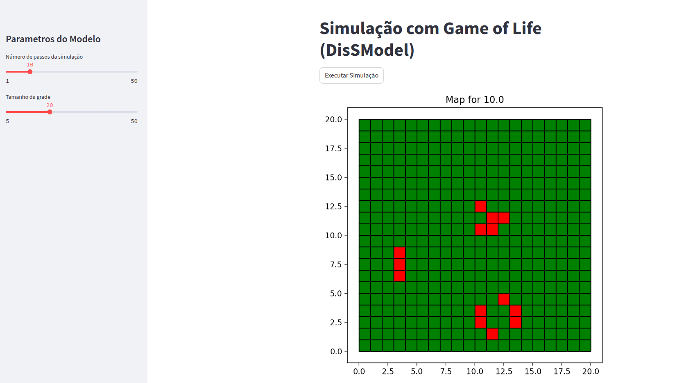

Game of Life
🔲 Exemplo 1: Game of Life (Jogo da Vida)
O Game of Life, criado por John Conway, é um autômato celular clássico com regras simples:
- Uma célula viva permanece viva com 2 ou 3 vizinhos vivos.
- Uma célula morta revive com exatamente 3 vizinhos vivos.
🧩 Componentes do Modelo
- A grade é inicializada com padrões (ex:
glider,toad, etc.), usandofill(..., strategy=FillStrategy.PATTERN). - A vizinhança usada é a Queen, que considera os 8 vizinhos ao redor.
- A regra de atualização verifica o número de vizinhos vivos para decidir o próximo estado.
class GameOfLife(Model):
def rule(self, idx):
value = self.gdf.loc[idx].state
count = self.neighborhood.neighs(idx)["state"].fillna(0).sum()
if value == 1:
return 1 if count in [2, 3] else 0
else:
return 1 if count == 3 else 0
🖼️ Visualização
A visualização utiliza Map(...) com colormap personalizado:
- Células vivas em vermelho (
state = 1) - Células mortas em verde (
state = 0) - Interface interativa com
Streamlitpara ajustar tamanho da grade e passos da simulação.
📷 Exemplo de execução

💻 Código completo (Game of Life)
from dissmodel.core import Model, Environment
from dissmodel.geo import regular_grid, fill, FillStrategy, Neighborhood
from dissmodel.visualization.map import Map
from matplotlib.colors import ListedColormap
import streamlit as st
import random
from libpysal.weights.contiguity import Queen
class GameOfLife(Model):
patterns = {
"glider": [
[0, 1, 0],
[0, 0, 1],
[1, 1, 1]
],
"toad": [
[0, 1, 1, 1],
[1, 1, 1, 0]
],
"blinker": [
[1, 1, 1]
]
}
def setup(self, gdf):
self.gdf = gdf
self.neighborhood = Neighborhood(Queen, gdf, use_index=True)
def rule(self, idx):
value = self.gdf.loc[idx].state
neighs = self.neighborhood.neighs(idx)
count = neighs["state"].fillna(0).sum()
if value == 1:
return 1 if count in [2, 3] else 0
else:
return 1 if count == 3 else 0
def execute(self):
self.gdf["state"] = self.gdf.index.map(self.rule)
print(self.env.now())
st.set_page_config(page_title="Modelo Game of Life", layout="centered")
st.title("Simulação com Game of Life (DisSModel)")
st.sidebar.title("Parâmetros do Modelo")
steps = st.sidebar.slider("Número de passos da simulação", min_value=1, max_value=50, value=10)
grid_dim = st.sidebar.slider("Tamanho da grade", min_value=5, max_value=50, value=20)
custom_cmap = ListedColormap(['green', 'red'])
plot_params = { "column": "state", "cmap": custom_cmap, "ec": 'black' }
grid = regular_grid(dimension=(grid_dim, grid_dim), resolution=1, attrs={'state': 0})
for name, pattern in GameOfLife.patterns.items():
start_x = random.randint(0, grid_dim - 5)
start_y = random.randint(0, grid_dim - 5)
fill(strategy=FillStrategy.PATTERN, gdf=grid, attr="state", pattern=pattern, start_x=start_x, start_y=start_y)
env = Environment(end_time=steps, start_time=0)
GameOfLife(gdf=grid)
if st.button("Executar Simulação"):
plot_area = st.empty()
Map(gdf=grid, plot_area=plot_area, plot_params=plot_params)
env.run()